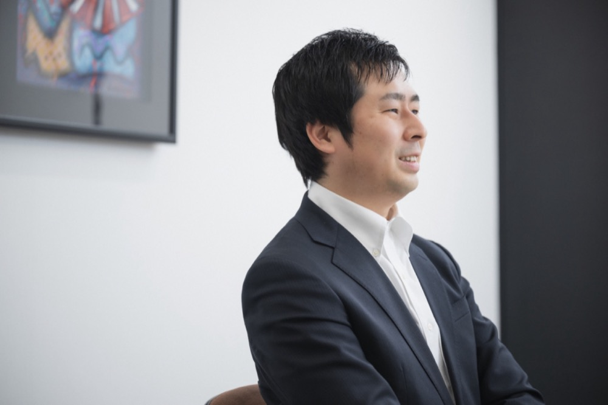
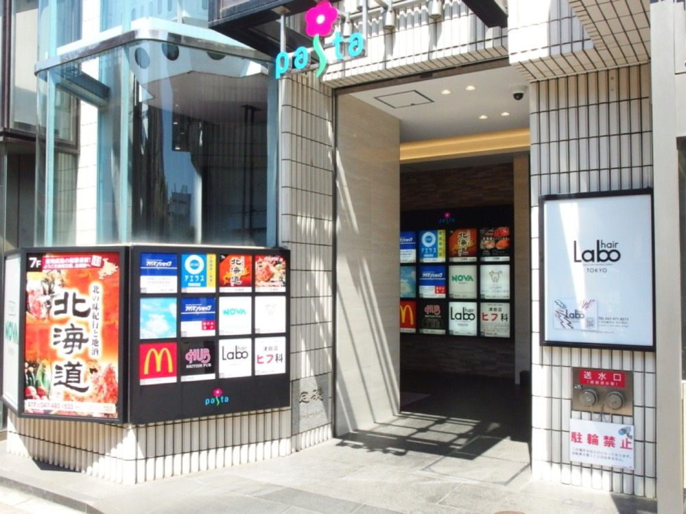
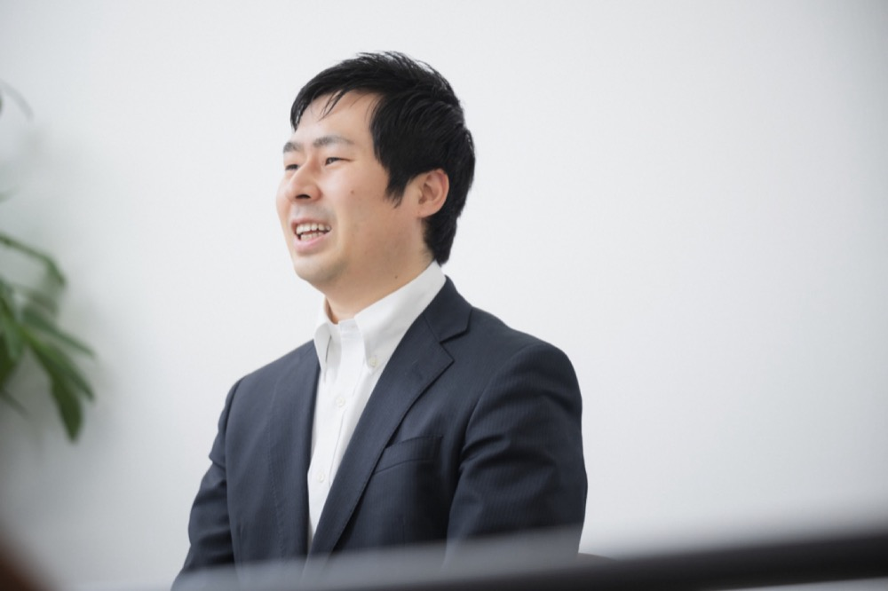
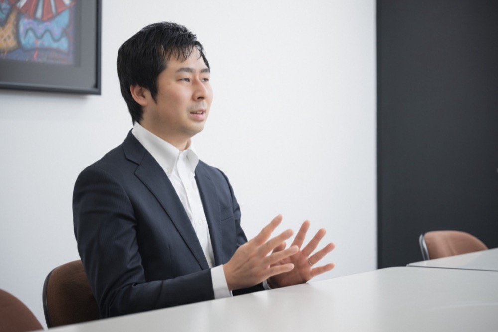

「創業の地」と共に歩む覚悟と、経営者としての冷静な視点
椎名 航一Koichi Shiina
有限会社かし熊 代表取締役
理系大学を卒業後、IT企業にてシステムエンジニア・プログラマーとして勤務。30歳で家業である有限会社かし熊に入社。IT業界で培った知見を活かし、社内のIT化・DXを推進する。現在は代表取締役として、津田沼駅周辺および千葉市、八千代市に保有する計7棟のビルの経営管理を行う傍ら、船橋市前原商店会や第4回ふなばし市民まつり津田沼会場実行委員長を務めるなど、地域振興にも尽力している。
企業サイトを見るTRACK 01
「創業の地」と共に歩む覚悟と、経営者としての冷静な視点

有限会社かし熊の事業の根幹は不動産賃貸業である。現在、同社は7棟の収益ビルを保有しており、そのうちの5棟が津田沼駅周辺、特に前原西エリアに集中している。これは単なる資産の偏りではない。椎名の曾祖父の代から脈々と受け継がれてきた「津田沼の発展と共に会社を成長させる」という創業家のアイデンティティそのものと言える配置だ。
「私たちの歴史は、津田沼という街の歴史と不可分です。街が栄えれば会社も潤い、会社が力をつければ街に還元できる。この好循環を作ることが、代々の使命でした」と椎名は語る。
しかし、四代目として経営の舵を取る椎名の視点は単なる郷土愛だけに留まらない。彼は就任後、事業の永続性を確保するために、あえて創業の地以外への投資も行っている。現在保有する7棟のうち2棟は千葉市や八千代市など近隣エリアに分散して取得したものだ。一極集中のメリットである管理効率の良さを理解しつつも災害リスクやエリアごとの経済変動を見据えてポートフォリオを最適化する。そこには「守るべき場所（津田沼）」を確実に守り抜くために経営基盤を盤石にするという冷徹な計算と熱い想いが同居している。
TRACK 02
「0から1を生む」エンジニアの魂がアナログな家業を変えた

椎名のキャリアは老舗不動産会社の跡取りとしては異色だ。学生時代からプログラミングに没頭し、理系大学を経てIT企業に就職。約5年間エンジニアとしてシステム開発の最前線に身を置いてきた。「自分の書いたコードが動き、形になり、それが価値を生む。そのクリエイティブなプロセスに魅了されていました」と当時を振り返る。
30歳を機に家業に戻った彼を待っていたのは、IT業界とは対極にある世界だった。建物というハードウェアはそこにあるものの自身が手を動かして何かを生産するわけではない不動産賃貸業。「何も作っていないのに収益が上がる」というビジネスモデルに、ものづくりに情熱を注いできたエンジニアとしての自分との間で強烈な葛藤が生まれたという。さらに、当時の社内は驚くほどアナログで、情報の管理や共有が旧態依然としたまま放置されていた。
しかし、椎名はこの違和感を「改革の種」へと変えた。「郷に入っては郷に従え」で一度は既存のやり方を受け入れつつもエンジニア時代に培った論理的思考と技術力を武器に社内のDXを断行したのだ。紙ベースだった情報のデジタル化、検索性の向上、業務フローのシステム化。これらは単なる効率化ではない。社員が煩雑な事務作業から解放され、テナントへの細やかな対応や、後述する地域活動へとリソースを割くための「時間」を生み出す改革だった。かつて「0から1を生み出す」ことに喜びを感じたエンジニアの魂は今、組織というOSをアップデートし新たな企業文化を創造することに向けられている。


TRACK 03
街の鼓動を取り戻せ――100,000人を熱狂させた市民まつり
椎名の活動は、社内の改革だけに留まらない。「津田沼の発展なくして、かし熊の発展なし」この信念は具体的なアクションとなって街に還元されている。その象徴と言えるのが「ふなばし市民まつり」における津田沼会場の運営だ。 コロナ禍や大型商業施設の撤退により、一時期元気を失いかけていた津田沼。その閉塞感を打破しようと立ち上がったのは、椎名を含む地元商店会のメンバーたちだった。彼らは市や関係各所に粘り強く働きかけ公道を封鎖した大規模なイベント会場の設置を実現させた。2023年に行われた第1回開催では土曜日の1日だけで約40,000人が来場。2025年の第3回では天候にも恵まれて1日あたり50,000人を超える人々が津田沼の通りを埋め尽くした。会場には屋台が並ぶだけでなく自衛隊や消防、警察の協力による特殊車両の展示、地元の子供たちによるパフォーマンスなどが行われ、まさに「地域総出」の祝祭空間が生まれた。
「実行委員として準備に関わり、当日は裏方として走り回りました。来場された皆さんの笑顔や活気を取り戻した通りの光景を見た時に不動産業だけでは得られない種類の達成感がありました」
かつて父親が商店会長として街のために奔走していたように椎名もまた、地域コミュニティのハブとなり人と人、人と街を繋いでいる。この泥臭くも温かい活動こそがテナントや住民からの信頼という貸借対照表には載らない無形の資産を築き上げているのだ。